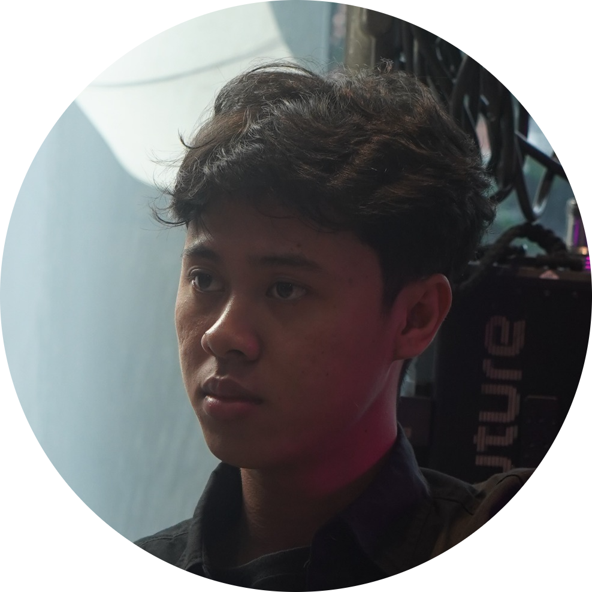
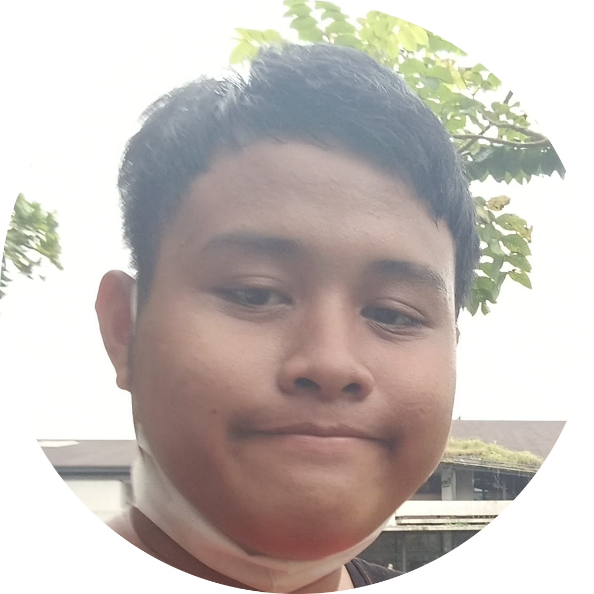

Menelusuri Jejak, Menginspirasi Usaha
Menelusuri Jejak, Menginspirasi Usaha
Mengenal lebih dekat tim di balik proyek jurnalisme data Jejak Usaha.
Jejak Usaha adalah sebuah platform media yang didedikasikan untuk mengumpulkan, menganalisis, dan menyajikan potret pergerakan ekonomi lokal melalui kacamata Jurnalisme Data. Kami berfokus pada dinamika, daya tahan, dan strategi bisnis yang diterapkan oleh pelaku Usaha Mikro, Kecil, dan Menengah (UMKM).
Website ini dibangun sebagai wadah publikasi hasil riset lapangan mendalam. Melalui pengumpulan data langsung dari puluhan responden pedagang di kawasan Ketintang dan Royal Plaza Surabaya, kami bertujuan untuk menyajikan laporan yang tidak hanya sekadar berita, melainkan wawasan (insight) yang dapat dipertanggungjawabkan akurasinya.
Laporan investigasi dan analisis data yang tersaji di dalam platform ini merupakan hasil kerja keras dari tim mahasiswa yang terjun langsung ke lapangan untuk menggali fakta-fakta ekonomi di balik etalase UMKM.

